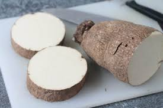

Asaro
Asaro is one of the most delicous foods coming from Nigeria. nigeria mashed yam asaro porridge how to cook itAlthough it’s mostly known as a porridge (there for the english name Yam porridge) one could compare it more to mashed potatoes, but then of course it are mashed yams. Instead of just serving plane mashed yam the nigerians add all these delicious species and ingredients to come up with this delicious dish which originally comes from the Yoruba people of Nigeria, but is now eaten all over the country and beyond.
| Ingredients |
Quantities |
| Yam |
1 tube |
| Onion |
1 bulb |
| Garlic |
2/3 cloves |
| Red bell peppers |
2 large pieces |
| Scotch bonnet chilli |
1 piece |
| Grated ginger |
1.5 tsp |
| Maggi |
2 cube |
| Water |
3 cups |
| Palm oil |
0.5 cup |
| Salt |
2 tbsp |
| Smoked fish |
2 big pieces |
| Pumpkin leaves |
Small bunch |
| Crayfish |
A handful |
- Method
- - Peel the yam and cut it into small cubes (2cm2) and leave it soaked in cold water
- - Cut the onions, tomatoes chillis and bell peppers into small pieces
- - Add the cubed yam to a sizeable pot and add water to cover the yam. Cook on medium to high heat for 15mins
- - Add the onions, tomatoes chillis, bell peppers and the remaining ingredients
- - Stir to combine then re-cover the pot. Continue boiling for 5 minutes then reduce to a simmer
- - When the yam is soft, partly mash to aid thickening (do not mash all the yam soft, leave some lumpy)
- - Add salt to taste if needed and it’s ready to be served
- - add any vegetable of choice (optional)
